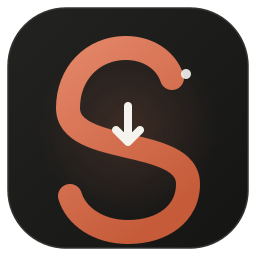
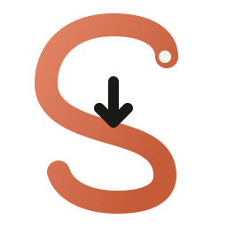
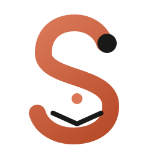
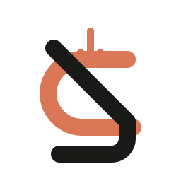
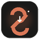
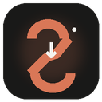

Skyc Logo & Visual Identity
Curated Studio Concepts • Anti-Slop Principles • Client-Side Craft

The Sky Capsule
Squircle presisi tinggi berlatar Obsidian dengan S-collector ribbon terracotta beraksen ivory core. Dirancang khusus untuk launcher Android & Windows taskbar.



The Vault Aperture
Dua lengkungan geometris kontinu yang mengalir membentuk huruf 'S' sekaligus membingkai downlink arrow tersembunyi di negative space tengah.


Editorial Serif Vault
Bentuk serif berkarakter tegas (terinspirasi Instrument Serif) dengan ball terminal dan dudukan bawah yang menangkap media beacon dot.


The Horizon Downlink
Pita kontinu bersudut 45 derajat gaya Bauhaus dengan dua tone warna tegas. Sangat mudah dikenali pada resolusi super kecil 16px favicon.

Uji Skalabilitas Multi-Resolusi
Logo yang baik mempertahankan kejelasan optik (optical clarity) di setiap skala, dari favicon 16px hingga banner toko 512px tanpa kehilangan bentuk.

64 × 64
128 × 128Simulasi Windows 11 Taskbar
Bagaimana ikon Skyc tampil berdampingan dengan aplikasi native lainnya di taskbar Windows.
Simulasi Android App Drawer
Tampilan rounded squircle adaptif pada grid aplikasi ponsel Android.